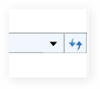

Whenever a user navigates to a different path, the previous paths will be saved. Those paths can be shown by clicking on the arrow near the Refresh Button. Doing so will display a drop-down box with a list of all the previous paths.

Figure 1030: History button